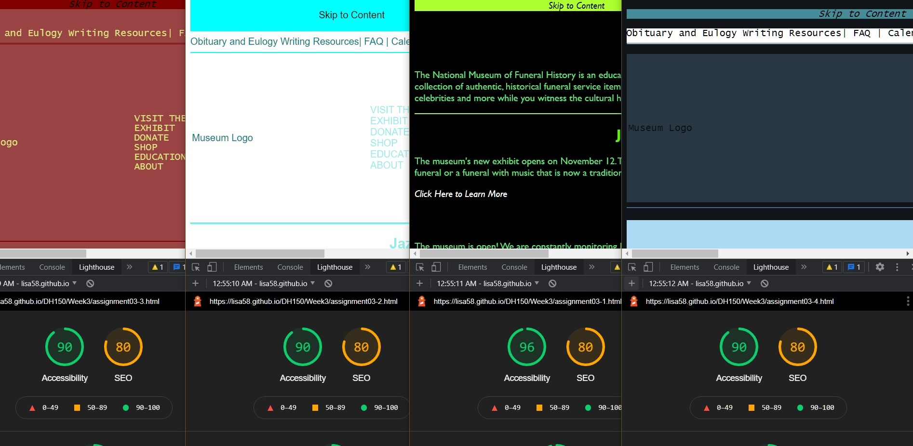

1) National Funeral History
Museum,
Accessibility (95), SEO (80)
The following documentation tests and improves web-accessibility of the official National Funeral History Museum and as shown in four markup websites.
I started research about the museum websites and narrowed down into five museums for accessibility/seo
audit. I used a Chrome Development tool named lighthouse to diagnose the accessibility and SEO score of
those websites.
1) National Funeral History
Museum,
Accessibility (95), SEO (80)
2) Museum of
Death,
Accessibility (93), SEO (80)
3) International
Cyptozoology Museum,
Accessibility (100), SEO (100)
4)
Museum of Broken Relationships,
Accessibility (68), SEO (70)
5)
International Banana Museum,
Accessibility (93), SEO (80)
some analysis, especiailly what kinds of codes looks influential on the seo score and accessibity
The getty research tool site was chosen for the project. List the multiple reasons for the musuem of your choice. Here are the process I develop and test to improve its accessibililty and seo.

Describe what you did to ensure the semantic html and provide the link to
assignment02.

Describe what you did for color-variation (with screenshots) and provide the
links to darkmode, lightmode, and monochomatic version.

Describe what you did to test keyboard accessibility and tab-order. Provide the
link to assignment04.
Describe what you did to support assistive technologies (or screen readers).
Provide the link to assignment05.
Write a brief reflection what you learned about evaluation and development with web-coding to improve web accessibility and SEO. Provide a summary of before (original site) and after (your mockup site) SEO and web accessibility audit report. You may need to provide a report or specifics with the evidence you have improved the work. State what you would want to work more (or any remaining questions) for the future work.